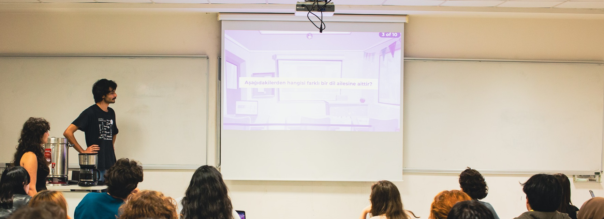

<html lang="en"></html>
<head>
    <meta charset="UTF-8">
    <meta name="viewport" content="width=device-width, initial-scale=1.0">
    <title>Deniz Akdemir</title>
    <link href="https://fonts.googleapis.com/css2?family=Roboto:wght@400;700&display=swap" rel="stylesheet">
    <link rel="stylesheet" href="style.css">
</head>
<body>
    <nav>
        <ul>
            <li><a href="#top">Home</a></li>
            <li><a href="mailto:deniz.akdemir@std.bogazici.edu.tr">Contact</a></li>
            <li><a href="src/cv.pdf">CV</a></li>
        </ul>
    </nav>
    <section>
        
        <div class="center">
            <div style=" margin: 2% 5%;">
                <h1>Deniz Akdemir
                    <span style="font-style: italic; font-weight: 100; font-size: medium;">(he/they)</span>
                </h1> 
                <p>dɛniz akdɛmiɾ</p>
                <a href="https://www.linkedin.com/in/ozgurdenizakdemir/" style="color:#434343;">LinkedIn</a>
                <br>
                
            </div>
            <div style="width: 75%;"><p class="paragraph">
                    Hello! I am a BA student in <a href="https://linguistics.bogazici.edu.tr" style="color:#434343;">Linguistics at Boğaziçi University</a>. 
                    I am interested in socio-linguistics, political linguistics, philosophy of language,
                    computational linguistics and sometimes German linguistics.
                    Currently, I am the chair of <a href="https://buling.org" style="color:#434343;">BULING</a> (Boğaziçi University Linguistics Society).
                </p></div>
        </div>
    </section>
</body>
</html>